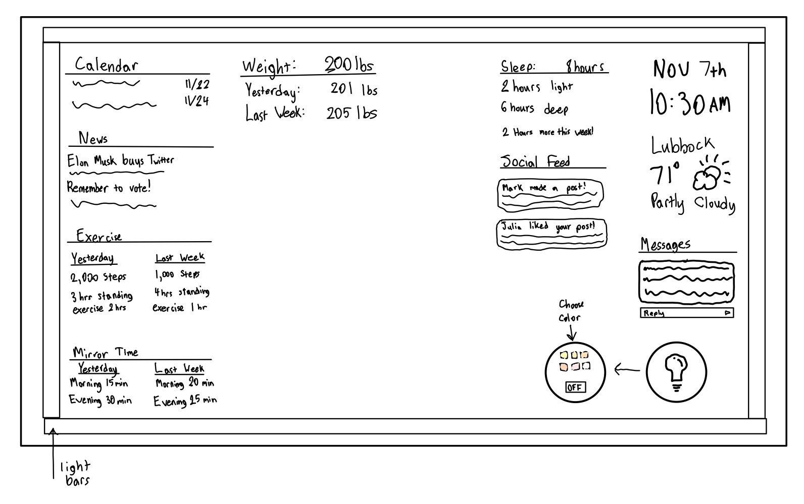
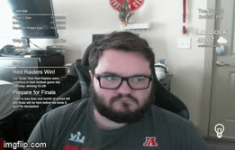

Matthew Rice Project 2
For a C

- The above sketch is very similar to what the final design of what my final project looks like.
- This interface is designed to be very easy for the user to use as all the features and information are self explanitory.
- For the health related information I will display the users weight.
- The only colors that will be used in this UI will be white and black, with the exception of the light bar which will have multiple color options.
For a B
- The implementation for this project was done using p5.js, below is a gif of the final project.

- For the calendar, news feed, and weight I have them recieve their information from csv files labeled with their respective names.
- For the clock I decided to go with a digital clock since it seems more practical for the mirror than an analog clock.
For an A
- For my project I added a light source around all of the edges in order to act as a light source, with different color options to choose from.
- Once the user clicks the lightbulb in the bottom right a panel will show up that allows the user to choose a color and turn on the panel.
- Click here to visit my GitHub repository.
- Click here to view and use my project.
Project Presentation